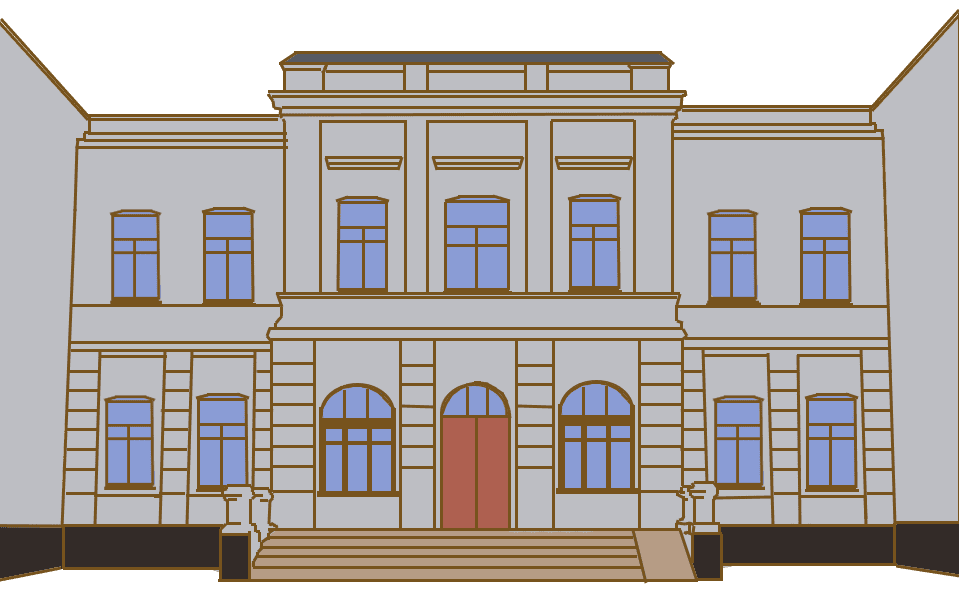
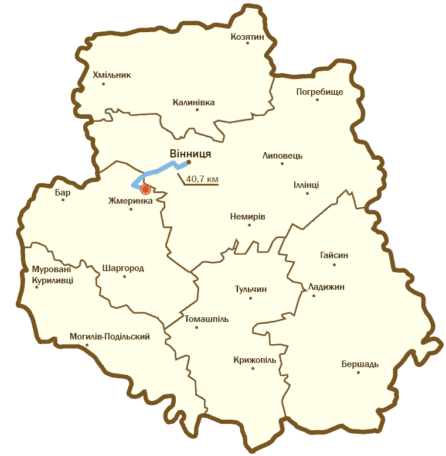

Загальні відомості
Садиба фон Мекків – одна з найголовніших пам'яток невеликого містечка Браїлів. Розташований на березі річки Рів. Охайний двоповерховий будинок-палац в стриманому класичному стилі був закладений ще задовго до прибуття сім'ї Карла фон Мекка в містечко. Свою знамениту садибу він викупив у 1868 році в місцевого поміщика. Під час Другої світової війни маємток був зруйнований, але згодом відновлений.
Історія
Браїлів в 1867-му придбав російський залізничний магнат Карл фон Мекк. Нащадок древнього німецького роду починав кар'єру на скромній чиновницькій посаді транспортного відомства. На хвилі залізничного буму він залишив державну службу, організував акціонерне товариство і заробив нечувані гроші на державних підрядах. Левову частку первинних мільйонів склала економія на будівництві, викликана очевидно завищеними кошторисами. Браїлівський маєток побудовано саме з надприбутків. Швидше за все, подільські землі фон Мекка зацікавили саме під час будівництва залізниці. Крім палацу з парком підприємливий господар Браїлова володів місцевими цукровим і цегляним заводами, підприємством з випалювання вапна.
Зовнішній вигляд
Частково зберігся чудовий ландшафтний парк, де зростає близько 45 видів дерев і чагарників, а величні липи та граби пам'ятають події минулих століть. Розкішний парк, стави з лебедями, сите життя дійсно надихали композитора. В Браїлові Чайковський написав першу оркестрову сюїту, оперу «Орлеанська діва», п’єси для скрипки, сім романсів. В той же період написані «Євгеній Онєгін», «Лебедине озеро», «Коваль Вакула», «Черевички». Будинок-палац фон Мекків і прилегла до нього територія мають декілька функцій. Одна з частин будинку перетворена на музей відомого музиканта Петра Ілліча Чайкоського. Інша частина - це Браїлівський професійний ліцей
Як дістатися
Адреса палацу: вулиця Чайковського, 13, Браїлів, Жмеринський район, Вінницька область.
До палацу можна дістатися такими шляхами: на автомобілі та електричкою Козятин-Жмеринка, оскільки є станція Браїлів.
На рисунку показано, як дістатися саме на автомобілі. Дорога займатиме 40,7 км, що триватиме майже 40 хвилин.
Цікаві факти
За легендою дружина фон Мекка – Надія заявила своєму чоловікові: «Не бажаю, аби твої паровози гуділи в мене під вікнами». В результаті вузлову станцію збудували не у Браїлові, а в маловідомій тоді Жмеринці. Та й браїлівський вокзал побудували кілометри за три від центру містечка.
Надія фон Мекк дійсно була жінкою вольовою і ґаздовитою. Маючи у шлюбі з Карлом Федоровичем 18 дітей вона не обмежилась домашнім господарством. Після передчасної смерті чоловіка від серцевого нападу Надія Філаретівна власноруч взяласяза управління величезними статками. А це не лише з десяток маєтків (зокрема, у Відні, Москві, Швейцарії, Італії), а ще й кілька мільйонів, вкладених переважно в акціонерний капітал залізниць.
Багату вдову захоплювало меценацтво. Вона вирішила підтримувати вічно голодні таланти: фінансує піаніста Миколу Рубінштейна, французького композитора Клода Дебюссі та Петра Чайковського. Фінансувала — тобто винаймала для роботи, сплачуючи занадто щедрі гонорари. Так, Дебюссі деякий час працював домовим піаністом. А Чайковському Надія Філаретівна на почин зробила якесь дріб’язкове замовлення, за яке заплатила чималу суму. Переписка з Чайковським, яка почалась в 1876-му році, тривала 13 років. (Її видання з 497-и листів умістилось в три томи). Крім того, Надія фон Мекк запропонувала композитору не лише сплату всіх його боргів, але й щомісячну стипендію в 500 рублів. Це більше ніж багато.